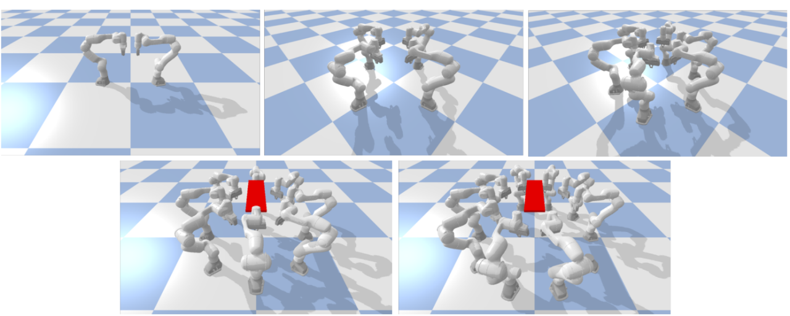
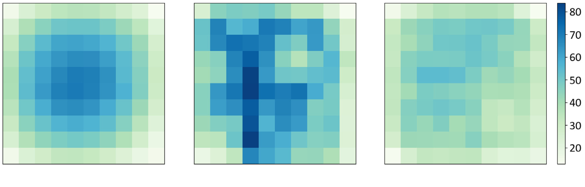
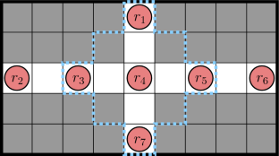
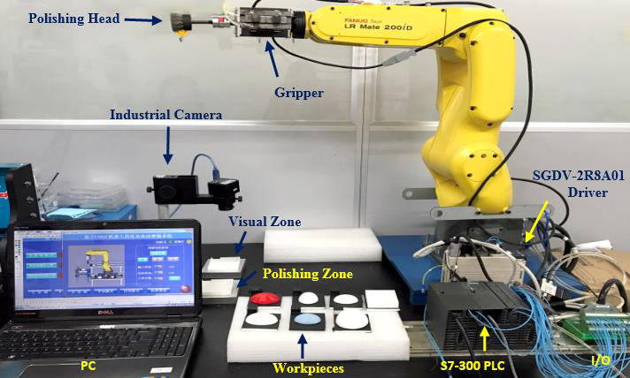
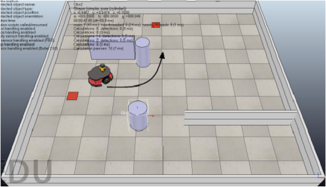
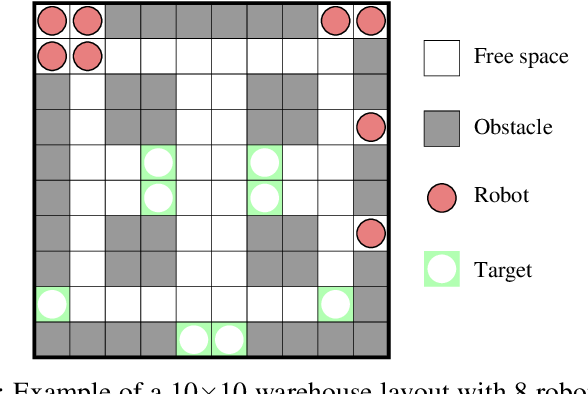
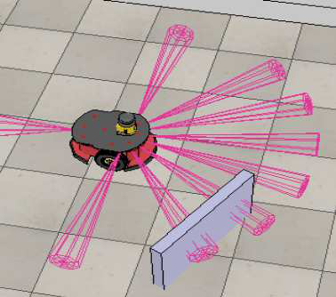
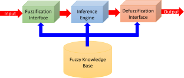

Abderraouf Maoudj | Post-Doctoral Research Fellow, IRC-IMR (KFUPM)
Roboticist focused on next-generation robotic manipulation and learning systems; leading work on lifelong learning, multi-arm coordination, and human–robot collaboration.
Curriculum Vitae [PDF]Education
Ph.D. in Process Control & Robotics, University of Sciences and Technology Houari Boumediene (USTHB) 2013 – 2018
- Thesis: Remote Control of a Heterogeneous Multi-Robot System: application to the RobuTER/ULM and AGV-M6 platforms.
M.Sc. in Electronics & Control, Mohamed Seddik Ben Yahia University, Jijel 2010 – 2012
- Thesis: Design and Realisation of a Mobile Robot.
B.Sc. in Electrical Engineering, Mohamed Seddik Ben Yahia University, Jijel 2007 – 2010
- Capstone: Development of a Card Reader.
Experience
Post-Doctoral Fellow, Interdisciplinary Research Center for Intelligent Manufacturing & Robotics (IRC-IMR), KFUPM 2023 – Present
- Leading research on lifelong learning and adaptive control for collaborative robots.
- Developing transformer-based multi-arm coordination and VLA-guided zero-shot task generalization.
- Established a robotics test-bed for research and teaching.
Post-Doctoral Researcher, SDU Biorobotics, University of Southern Denmark 2020 – 2023
- Decentralized/distributed multi-agent planning for e-commerce logistics.
- Delivered sub-second coordination for >1,000 robots in dynamic warehouses, boosting throughput.
Senior Researcher, Robotics Division, CDTA (Algeria) 2014 – 2020
- Industry 4.0 innovations, cyber-physical systems integration, and distributed multi-agent control for smart manufacturing.
Teaching & Mentorship
Teaching and mentorship have been integral to my academic journey.Over the years, i have conceived and delivered undergraduate and graduate
courses that blend simulator work and physical-robot labs.
My dual experience in academia and industry enables me to lead research initiatives and ensure that students
are well-prepared for the complexities of modern robotics applications,
so that they gain problem-solving skills relevant to emerging industry needs.
Courses include:
Introduction to Robotics and AI
Reinforcement Learning for Control
- A Data-Driven Approach to Complex Systems
Electronics for Robotics
Autonomous Navigation
- Basics, and Key Concepts in Applied Robotics
Industrial PLCs
Publications
Journal Papers / Conference Proceedings / Preprint

Robotics and Autonomous Systems, Elsevier, 2025
vol. 12, pp. 1652426, 2025.

Applied Intelligence, vol. 55, no. 12, pp. 873, 2025.

Swarm and Evolutionary Computation, vol. 93, pp. 101833, 2025.
2024 4th International Conference on Embedded & Distributed Systems (EDiS), pp. 193-198, 2024.

Swarm Intelligence, vol. 18, no. 2, pp. 167-185, 2024.

2024.

Sci. Technol, vol. 27, no. 1, pp. 21-36, 2024.
2024 IEEE 20th International Conference on Automation Science and Engineering (CASE), pp. 10.1109/CASE59546.2024.10711327, 2024.

2023 21st International Conference on Advanced Robotics (ICAR), pp. 28-34, 2023.

2023.
Robotics and Computer-Integrated Manufacturing, vol. 81, pp. 102514, 2023.

vol. 56, no. 4, pp. 3369-3444, 2023.
pp. 104-116, 2022.
Swarm Intelligence: 13th International Conference, ANTS 2022, Málaga, Spain, November 2–4, 2022, Proceedings, vol. 13491, pp. 104, 2022.
International Journal of Artificial Intelligence and Soft Computing, vol. 7, no. 4, pp. 329-352, 2022.
2021 26th IEEE International Conference on Emerging Technologies and Factory Automation (ETFA), pp. 1-8, 2021.
2021 IEEE 17th International Conference on Automation Science and Engineering (CASE), pp. 1338-1345, 2021.
1st National Conference on Applied Computing and Smart Technologies. Ecole Supérieure en Informatique, Sidi Bel Abbès, Algeria. Available at: https://www. researchgate. net/publication/353165007_Multi-Agent_Control_of_an_Industry_40_Cyber-physical_Assembly_Cell (accessed 11 December 2021), 2021.
Applied Soft Computing, vol. 97, no. 2020, 2020.
Algerian Journal of Signals and Systems, vol. 4, no. 2, pp. 39-50, 2019.
The International Conference on Networking Telecommunications, Biomedical Engineering and Applications (ICNTBA 2019), 2019.
vol. 33, no. 15-16, pp. 764-799, 2019.
International Conference on Networking Telecommunications, Biomedical Engineering and Applications (ICNTBA 2019), 2019.
International Journal of Imaging and Robotics, vol. 19, no. 03, 2019.
International Journal of Systems, Control and Communications, vol. 10, no. 2, pp. 95-125, 2019.
2018 International Conference on Applied Smart Systems (ICASS), pp. 1-7, 2018.
2018.
International Journal of Uncertainty, Fuzziness and Knowledge-Based Systems, vol. 26, no. 5, pp. 809, 2017.
Journal of Intelligent Systems, 2017.
Robotics and Autonomous Systems, vol. 89, pp. 95-109, 2017.
2017.
The 5th International Conference on Electrical Engineering – Boumerdes (ICEE-B) , Boumerdes, Algeria., no. 978-1-5386-0686-5/17/$31.00 ©2017 IEEE, 2017.
Journal of Intelligent Manufacturing, vol. 30, no. 4, pp. 1629–1644, 2017.
pp. 67-72, 2016.
IECON 2016-42nd Annual Conference of the IEEE Industrial Electronics Society, pp. 692-697, 2016.
2016.
2015 IEEE 13th international conference on industrial informatics (INDIN), pp. 179-184, 2015.
pp. 38-43, 2014.
Skills
-
Python & C/C++
— Expert · Programming PyTorch, CMake, Git, Docker, Linux
-
ROS
— Advanced · Robotics ROS 1, ROS 2, MiR, Meca500
-
Robotic Manipulators
— Advanced · Robotics KUKA LBR iiwa, Enable Robotics MM
-
Control Electronics
— Advanced · Embedded Systems STM32, Arduino, Siemens TIA-Portal, Real-time PLC
-
Languages
— — · Communication Arabic (native), English (fluent), French (fluent)